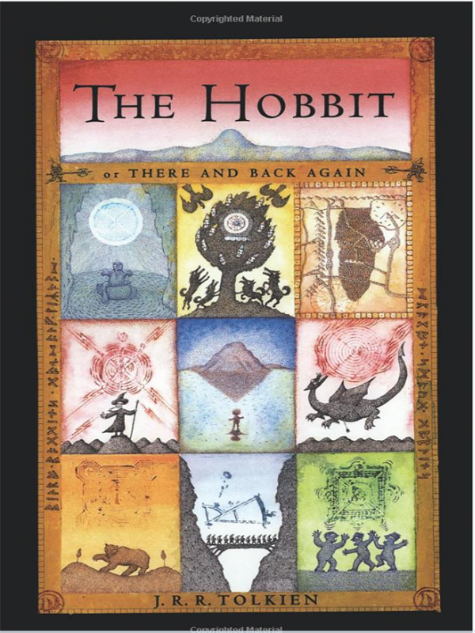

I have so many books! I usually buy my books from Amazon, mostly for class but I've also
bought several for fun or just as a useful resource for my library. Here are a couple of
books that I recommend for fun and to learn.
If you're really into the mechanics and physics of bicycles, or just into bicycles like
I am, then this is the book for you. Incredibily informational and full of graphs and
data.
Born of Blood and Fire gives an incredibly detailed take of the history of Latin America
since the European's made contact. It details the history and development of several
Latin American countries from then to the present.
The novel details the friendship of 13-year-old Palama and the 54-yearl-old widowed
concierge from her building, Renee Michel. Barbery details the amazing results and life
lessons learned from this unsual friendship.
If you want to learn the French language, I recommened Horizons.
This classic novel by Camus is a must read.

The movies are amazing! I definitely recommened reading the book. This expanded universe
will allow you to immerse yourself deeper into this wonderful fantasy world.